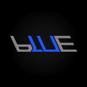

KOALAZ
Better Website

BLUE BACKLOG
|
|||


|
Welcome to Koalaz super wacky and crazy and fun and awesome 90s website. Here you can find all sorts of fun and wacky and awesome stuff. I will be updating this website with anything that reminds me of the 90s website aesthetic. If you click the "Better Website" button above you will be taken to my normal website. This is just a personal project to learn some basic HTML/CSS. If you have any ideas on how I can improve this websites aesthetic, please let me know by sending me an email You can find my email at the bottom of the page. Blue Backlog is a world leading group of intelligent like minded innovators seeking to replace Red Reserve. The vlogs that the Red House once provided have now ended, and we are trying to our fullest ability to replace the feeling that the Red House once had. Content may vary from vlogs to gaming videos. If you would like to support our efforts, please do so by subscribing to our channel. If this somehow gains some traction, in the future our leaders may purchase a house for the 4 original members of the Blue Backlog. The original members will be highlighted in the roster. We will make sure to put the goal of absolutely destroying the house for content. |
Hit Counter:
 If there are any issues email the webmaster: mark@koalaz.org
If there are any issues email the webmaster: mark@koalaz.org